ADS使用
计算射频线宽
介绍
PCB射频线一般需要满足特征阻抗为50Ω，可以根据板材介质材料，介质厚度，线的厚度（铜厚），离铺铜的距离等来计算需要的线宽。（或者根据线宽来调整离铺铜的距离）
计算线宽需要使用ADS中的LineCalc工具。（还有其他软件也有该功能，如AppCAD，使用方法类似）
LineCalc有两种打开方法，更推荐第二种
- 在ADS的任意原理图中，点击tools->LineCalc->Start LineCalc
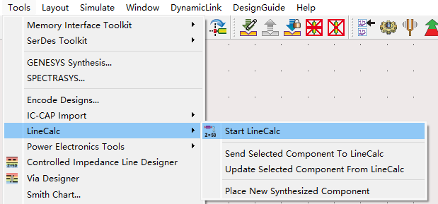
- 开始菜单，点开Advanced Design System，点击LineCalc
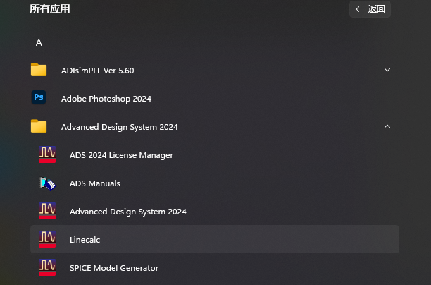
射频走线一般都是接地共面波导的模型，所以先将Type改为CPWG，界面如下：
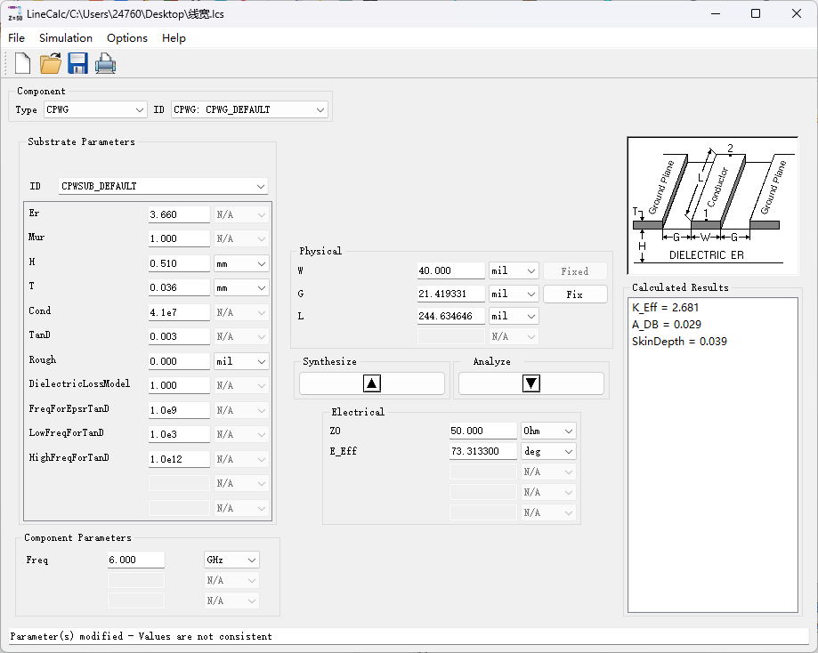
左边的方框主要为板材的基本信息：
- Er：板材介质的介电常数
- H：板材介质的厚度
- T：走线（铜皮）的厚度
- TanD：板材介质的损耗因子（损耗角正切）
- 其他参数一般保持默认即可，想知道具体含义参考《ADS2011射频电路设计与仿真实例》p82
左下的方框为工作频率。
中间上边W为线宽，G为离地的间距，在计算时，需要固定其中一个值（L不用管），中间下边Z0为特征阻抗。
中间往上的箭头为根据Z0计算W或G，往下的箭头为根据W和G计算Z0.
示例
示例：（即上图）
板材材料选择RoGers4350
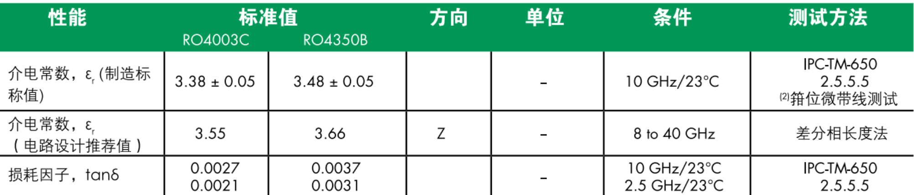
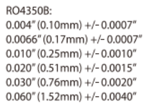
该材料介电常数Er的电路设计推荐值为：3.66
损耗因子TanD：因为工作频率为6G，所以我取了中间值，0.0034。（实际LineCalc只保留三位小数）
厚度H选择若干推荐标准厚度中的0.51mm
走线厚度T：选择AD的默认厚度0.036mm
频率6GHz
特征阻抗Z0为50
固定G为20mil，点击上箭头，计算出W为40mil左右。
固定W为40mil，点击上箭头，计算出G为21.4mil。
就可根据该规则来布局布线。
AD的PCB导入ADS仿S参数
参考资料：altium designer PCB 导入ADS EM仿真
AD导出ODB++文件
打开AD→file（文件）→ fabrication output（制造输出） → ODB++ files
绘制层→关闭所有→确定
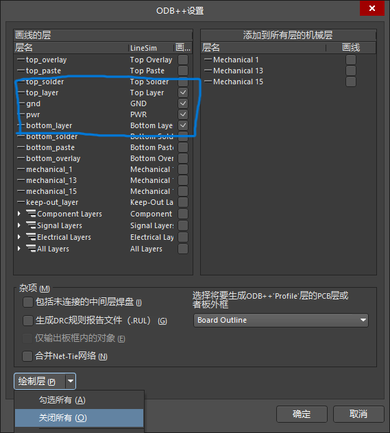
出现以下图片，确定。（还会生成并弹出.Cam文件，可以直接关掉不保存）
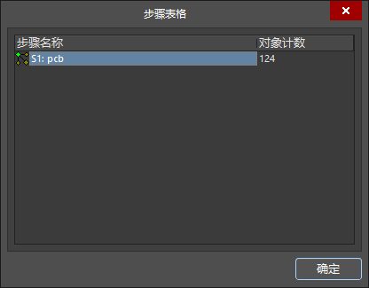
项目文件夹中会出现Project Outputs for LineSim文件夹
点开内容如下，等会儿会用到其中的.zip压缩文件
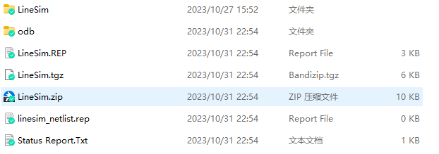
导入到ADS
打开ADS → 新建workspace → New Layout Window，选择mil为单位
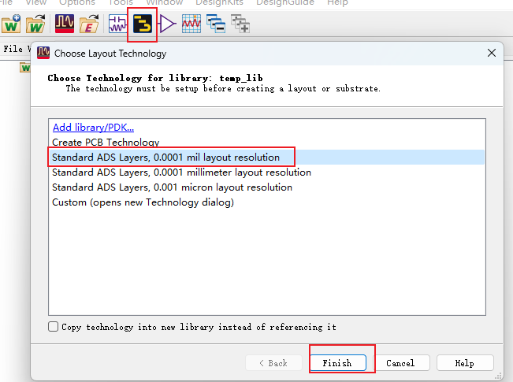
点击New Layout Window时，由于版本原因可能出现：
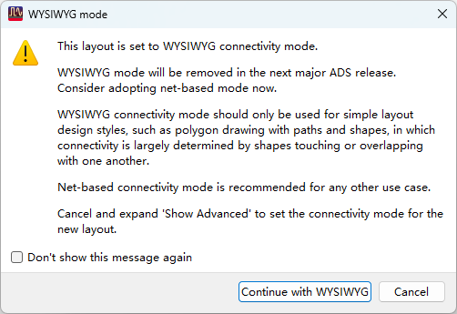
点Cancel，再按提示如下修改即可，
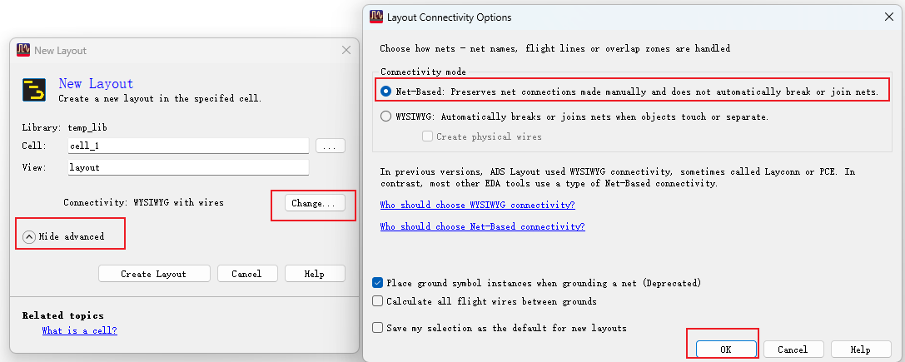
建好的layout界面如下：
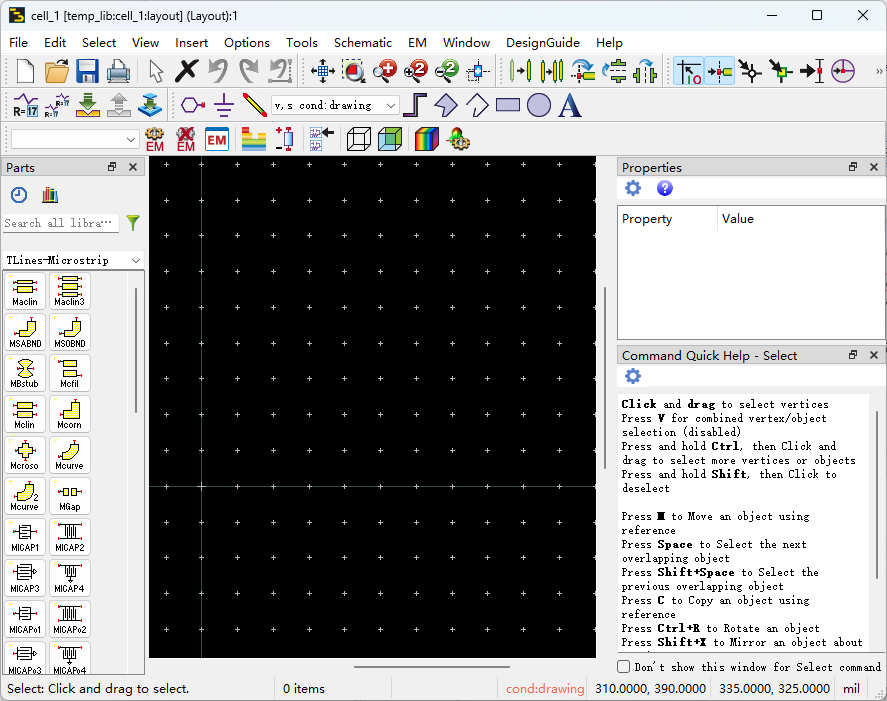
该界面，点击 File → import，选择ODB++ file format。
注：若出现ODB++ file format（legacy）选项，说明ADS版本较新，ODB++ file format选项与老版本的有差别，应该选择ODB++ file format（legacy）选项。
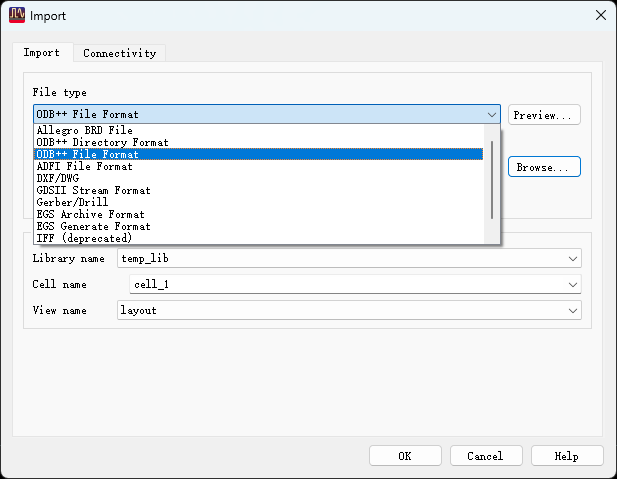
Import file name选择刚才AD导出的Project Outputs for LineSim文件夹中的压缩文件，点击options
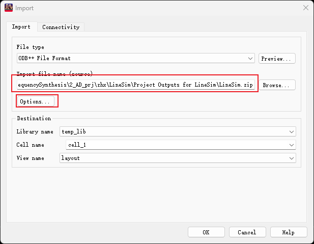
这里仿真不能有器件，所以component都要去掉，只仿线
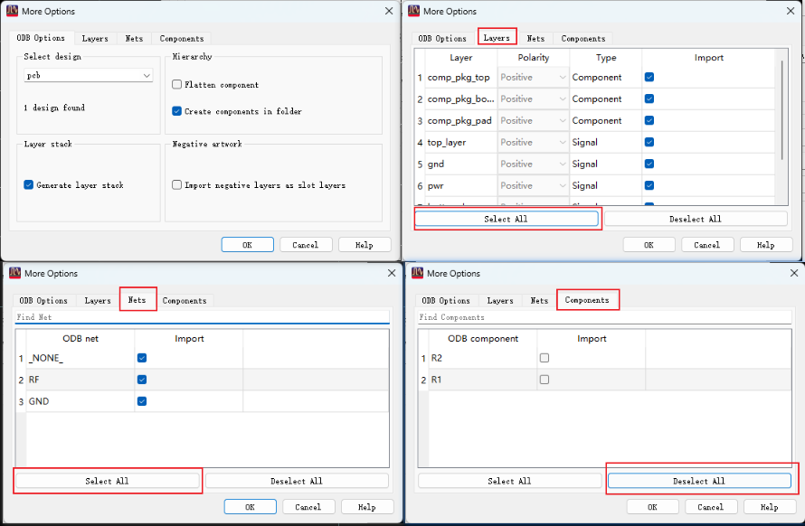
点击OK，出现以下界面：
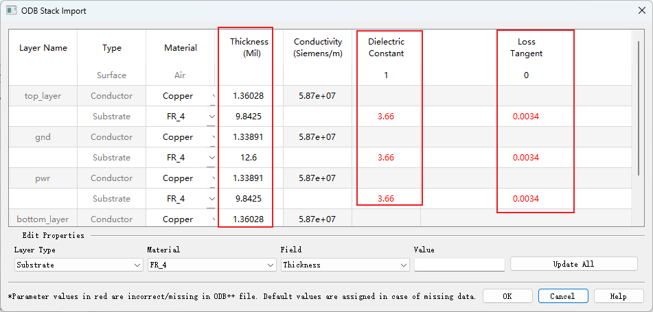
框出来的部分根据实际情况修改。thickness导进来有的会变很多。Dielectric Constant为介质介电常数，Loss Tangent为损耗因子（损耗角正切）
点击OK
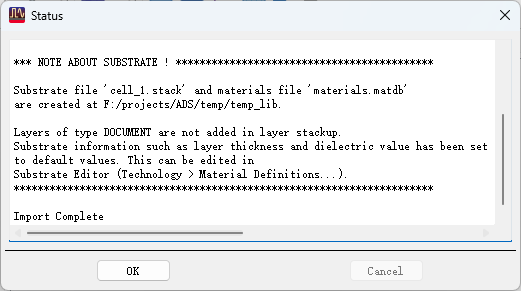
点击OK，打开layout，导入效果如下（这里发现AD中忘了铺铜）
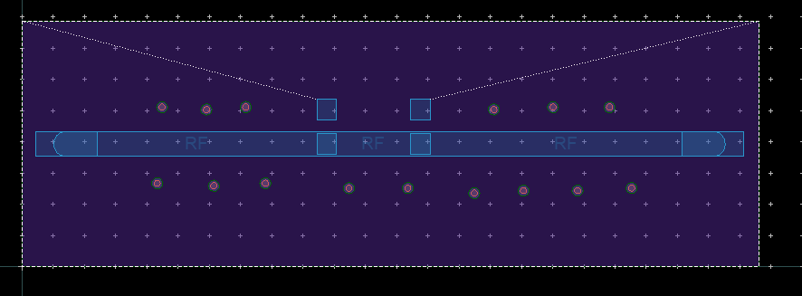
切板子（可选），添加端口port，设置仿真
如果PCB板太大，仿真时间会大大增加，只需要需要仿真的线的周围部分即可。
切换到top层，选中要仿真的线，点击EM → tools → Cookie Cutter
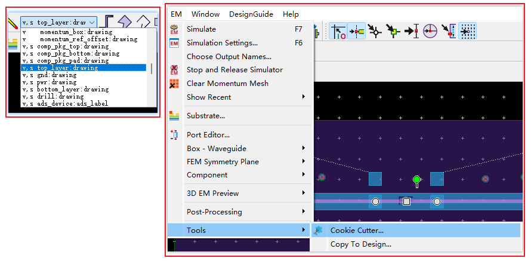
输如要切的范围，点击cut
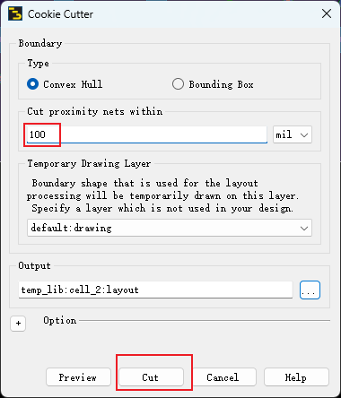
会生成新的layout界面，如下
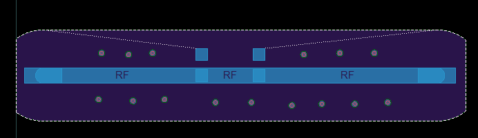
放置端口，点击端口放在线两边（ctrl+R旋转）
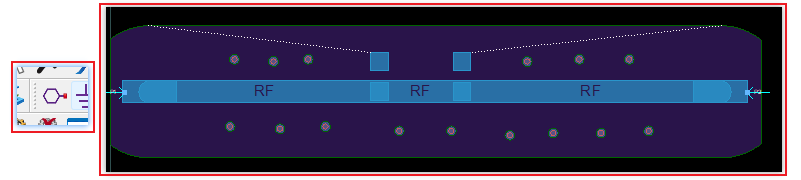
点击port editor，修改Gnd Layer为PCB板中的地层
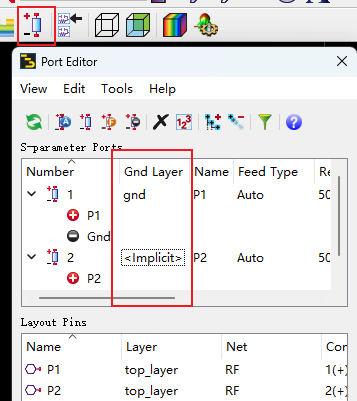
新建仿真设置
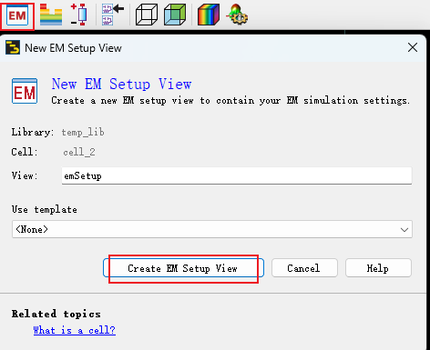
修改Frequency plan为要仿真的频段，例子如下：
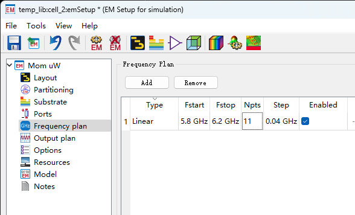
根据参考资料，把下图也勾上了，但似乎影响不大
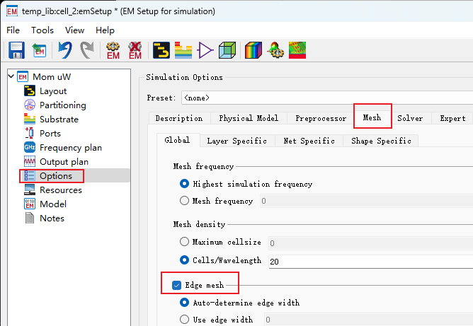
设置完就可以点击仿真设置界面右下角的simulate仿真了，或者点击下面的图标仿真
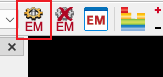
其他操作
修改移动精度。
默认的移动精度较大，不好调整位置
在option→Grid Spacing下调整
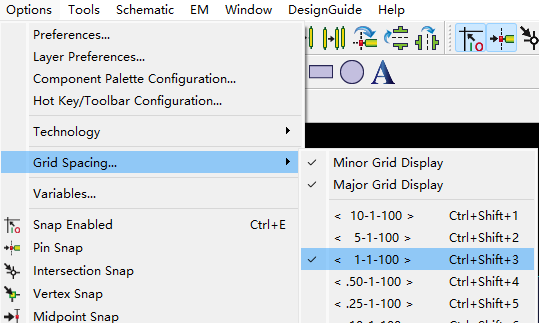
测量间距
insert→ruler
放好后，鼠标滑轮放大可以看到刻度，读出距离